内容要点
一段 12 分 31 秒的调色底层原理课，从光的色彩构成讲到三大色彩关系（互补色/邻近色/单色系）再到色彩三要素（明度/饱和度/色相），最后给出一级二级调色五步流程和实战案例。①光的色彩构成：RGB三盏灯两两重叠→黄/品红/青，调节亮度衍生全色→12色相环，达芬奇色轮排版完全对应。②互补色=色环180度相对（黄蓝/红青/绿品红），最强对比创造视觉焦点+增强张力；应用=突出主体（好莱坞橙青色调：环境青冷+肤色橙暖蓝橙互补）+校正肤色（偏黄加蓝中和）。③邻近色=相距60度（红黄/蓝青/紫品红），和谐统一引导沉浸；暖调=居家黄昏温馨、冷调=夜景科幻悬疑。④单色系=同一色变明度饱和度，简约安静高级；黑白电影/未来感/性冷淡风/杂乱场景化繁为景。⑤明度=色彩骨架（示波器0%-100%），塑造立体质感+引导视线（提亮主体压暗环境）；高调轻盈vs低调深沉；工具=色轮整体+曲线局部。⑥饱和度=鲜艳程度（0%灰-100%鲜艳），提高生动活力但过度虚假，降低宁静压抑复古；高饱和=动画爱情科幻、低饱和=战争复古。⑦色相=基本相貌对应色相曲线，统一颜色/改主体色相对比突出焦点；树叶变深绿偏黄、串联节点秋天氛围；色彩扭曲器色相饱和度联动。⑧调色流程：先整体后局部=一级垫底+二级局部；Log灰片五步=明暗反差→影调→色相饱和统一→风格化（曲线压实+暗角）→局部强化。⑨实战：直出理想跳过基础校正，影调→色相修正天空花草→饱和度曲线→肤色（提亮+磨皮+矢量图偏色校正）→天空青绿→暗部偏蓝→电影暗角。总结：先整体后局部+三种色彩关系+三大色彩要素。
知识结构
RGB三盏灯重叠出黄品青；调亮度成12色相环。
180度相对；创造焦点增强张力；橙青色调+肤色校正。
60度相近；和谐统一；暖调温馨冷调冷静。
同色变明度饱和；简约高级；黑白/极简/化繁为景。
明度/饱和度/色相=精准调色控制面板。
色彩骨架；立体质感+引导视线；色轮整体曲线局部。
0%灰-100%鲜艳；高饱和活力低饱和凝重。
基本相貌；曲线移动改风格；树叶/扭曲器联动。
先整体后局部；明暗→影调→统一→风格化→局部。
直出理想跳过校正；肤色磨皮+天空青绿+暗角。
先整体后局部+三种色彩关系+三大色彩要素。
调色底层原理=光的构成→色彩关系→色彩要素→流程。①光的构成：RGB三盏灯重叠出黄/品红/青，调节亮度成12色相环，达芬奇色轮排版对应。②三大色彩关系：互补色=180度相对（黄蓝/红青/绿品红）最强对比创造视觉焦点+突出主体（橙青色调）+校正肤色（偏黄加蓝）；邻近色=60度（红黄/蓝青/紫品红）和谐统一，暖调温馨冷调冷静；单色系=同色变明度饱和，简约高级，杂乱场景化繁为景。③色彩三要素：明度=色彩骨架（示波器0%-100%），塑造立体+引导视线，色轮整体+曲线局部；饱和度=鲜艳程度，0%灰-100%鲜艳，高饱和活力低饱和凝重，0=黑白；色相=基本相貌对应曲线位置，移动改风格，统一或对比突出焦点，扭曲器色相饱和联动。④流程：先整体后局部=一级垫底+二级局部；Log灰片五步=明暗反差→影调（避免过曝死黑）→色相饱和统一→风格化（曲线压实+暗角）→局部强化。⑤实战：直出理想跳过基础校正，影调→色相修正天空花草→饱和度→肤色磨皮校正→天空青绿→暗部偏蓝→电影暗角。
00:00-00:51光的色彩构成
三盏灯：「在一面墙上打上三盏灯，分别是红灯、绿灯和蓝灯。当红灯和绿灯的光束重叠时我们就得到了黄色；当蓝灯和红灯光束重叠时我们就得到了品红色，也叫洋红；当绿灯和蓝灯光束重叠时我们就得到了青色。」
调亮度成色环：「因为我们控制的是光，所以可以随意调节这三盏灯的亮度，把红色亮度调低一半就会得到黄绿和蓝紫，最终形成一个我们进行色彩分析时常用的12色环。」
对应达芬奇：「达芬奇软件中的色轮，它的色彩排版逻辑就完全对应着这个色环。」
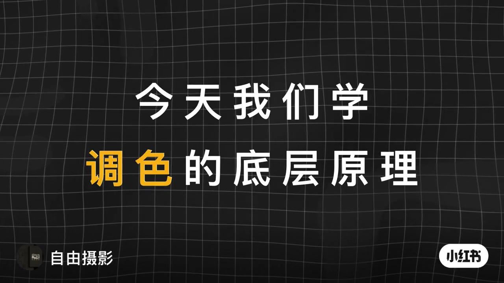
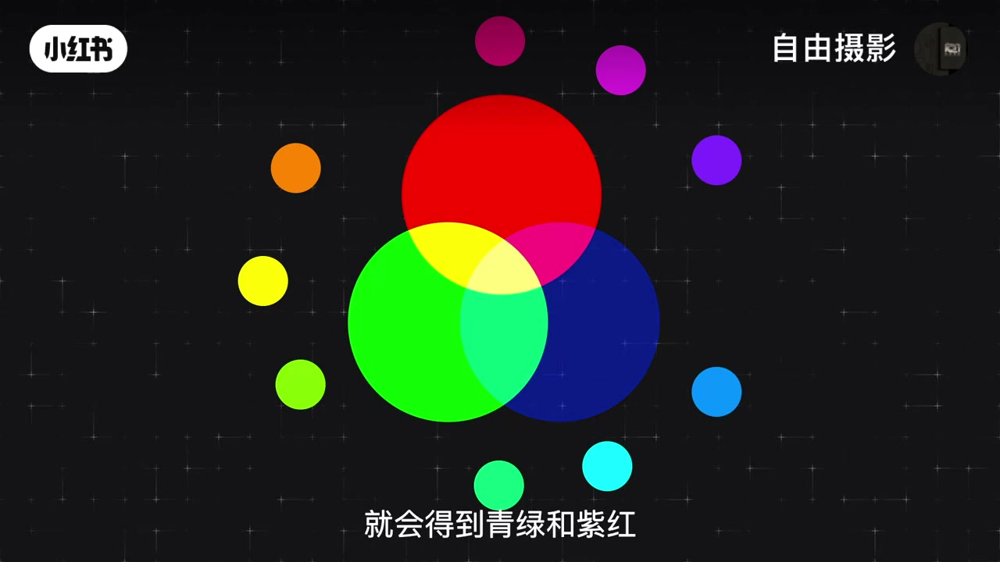
00:51-03:55三大色彩关系
互补色：「在色环上呈180度相对位置的两种颜色即为互补色，最经典的组合比如黄色与蓝色、红色与青色、绿色与品红色。互补色是色彩对比中最强烈的组合，核心的作用在于创造视觉焦点和增强画面张力。」
互补色应用：「突出主体分离层次，将主体与环境的颜色为互补色关系，能让主体从背景中鲜明的凸显出来，好莱坞经典的橙青色调即是典范，把环境调为青色冷调，人物肤色保持橙黄暖调，利用蓝橙互补使人物质感立体画面极具电影感。还可以中和色彩校正颜色，当画面人物肤色偏黄，借助互补色进行中和，通过增加少量蓝色就能使皮肤恢复到更自然的白皙状态。」
邻近色：「在色环上相距约60度的颜色称为邻近色，常见例子包括红与黄、蓝与青、紫与品红。邻近色因色相接近，能营造和谐统一的画面氛围，使色彩过渡平滑自然，引导观众沉浸于特定的情绪中。暖调邻近色适合表现温暖安详温馨的氛围，例如室内居家或黄昏场景；冷调邻近色常用于传达冷静孤独科技或神秘的情绪，例如夜景科幻片或悬疑片。」
单色系：「使用同一种颜色，通过变化画面的明度与饱和度来构建整个色彩方案。这种风格能带来极致简约统一和安静的视觉感受，让观众更专注于光影结构、纹理细节和形状构成。黑白电影就是单色系极致的表现。当场景元素杂乱颜色过多时，使用单色系可以化繁为景，立刻提升画面的秩序感。」
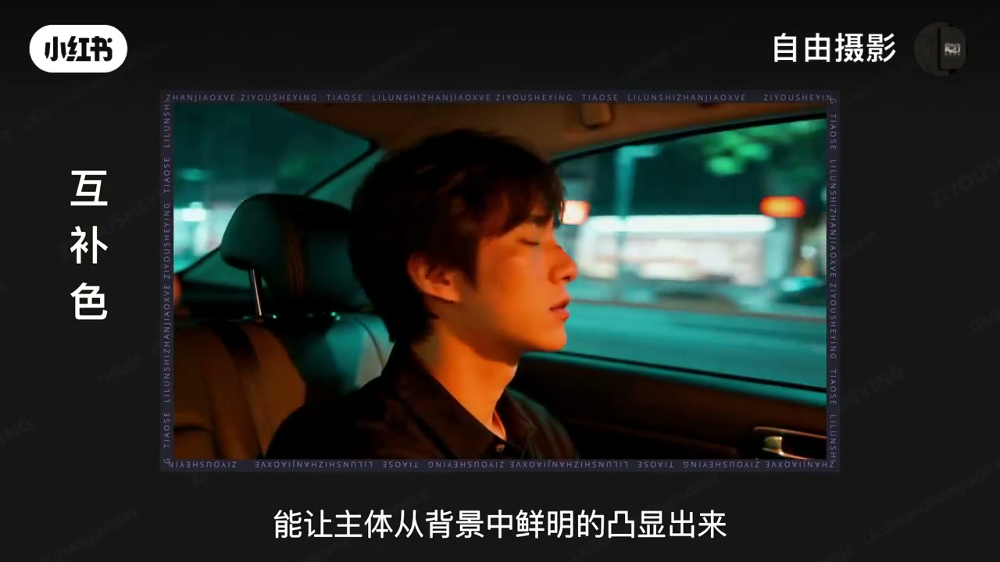
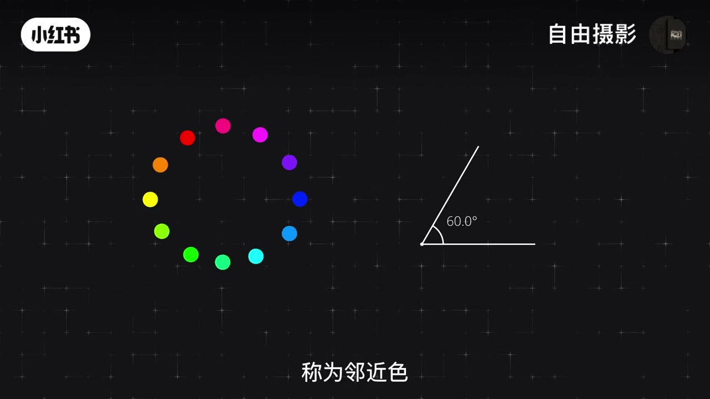
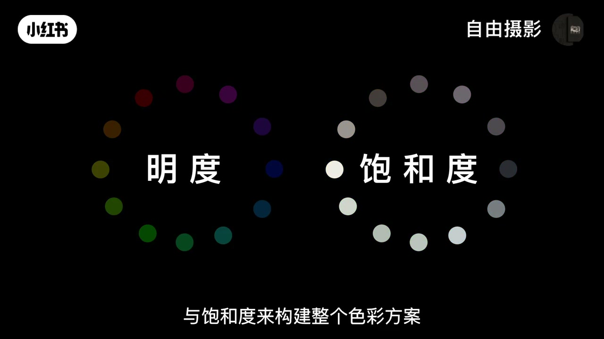
03:55-07:20色彩三要素
概述：「任何你看到的颜色都可以通过这三个维度来精确的描述和控制，也就是明度、饱和度与色相。理解了它们就等于拿到了精准调色的控制面板。」
明度：「指的是色彩明暗程度，它是色彩的骨架，决定了画面的影调层次。通过示波器可以直观观察，分布从底部百分之零纯黑到顶部百分之百纯白。它可以塑造立体与质感，如果画面没有明度层次物体就是平面的，通过刻画亮部暗部和中间调，一个球体才能圆润，一块布料才能显示出纹理。人眼会自然看向明亮且对比度高的区域，通过提亮主体压暗环境，可以不动声色的引导观众的视线。高调整体偏亮对比柔和带来轻盈明亮的感受；低调高反差整体偏暗会营造出深沉神秘或戏剧性的氛围。软件中色轮与曲线是控制画面明度的两种常用工具，色轮调整更直观适合整体性处理，曲线可以对从暗部到亮部的每一个明度层级进行独立调节。」
饱和度：「指的是色彩的鲜艳程度，0%完全灰色，100%极致鲜艳，它控制着色彩的浓度。提高饱和度会让画面更生动更具活力，但过度提升会显得虚假艳丽。降低饱和度就能营造出宁静压抑复古或高级的电影感，调整到0就会得到黑白影像。高饱和度常用于儿童动画、浪漫爱情片及风格化科幻作品；低饱和度更多用在战争题材或复古主题影片，使画面偏向中性灰调。」
色相：「是色彩的基本相貌，直接对应色彩在色相曲线上的具体位置。调整色相就是在画面中选取目标颜色，通过在曲线上移动某点来改变画面的色彩风格与整体氛围。可以通过色相调整统一画面中不同物体的颜色，也可以通过改变主体色相使它与环境形成对比从而突出视觉焦点。例如树叶绿色不足时，曲线下拉变为更深的绿色，上移就会偏向黄色；一个节点的调整强度不够可以多串联一个节点，进一步将色调加强为浓郁的橙黄色，营造秋天的氛围。还可以将色相与饱和度联动调整，在色彩扭曲器中把衣服的青绿向深蓝方向移动，青绿就会转变为青蓝色，同时饱和度也会相应提升。」
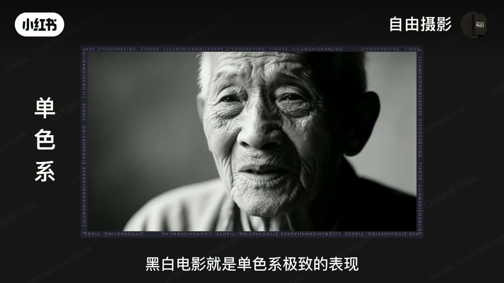
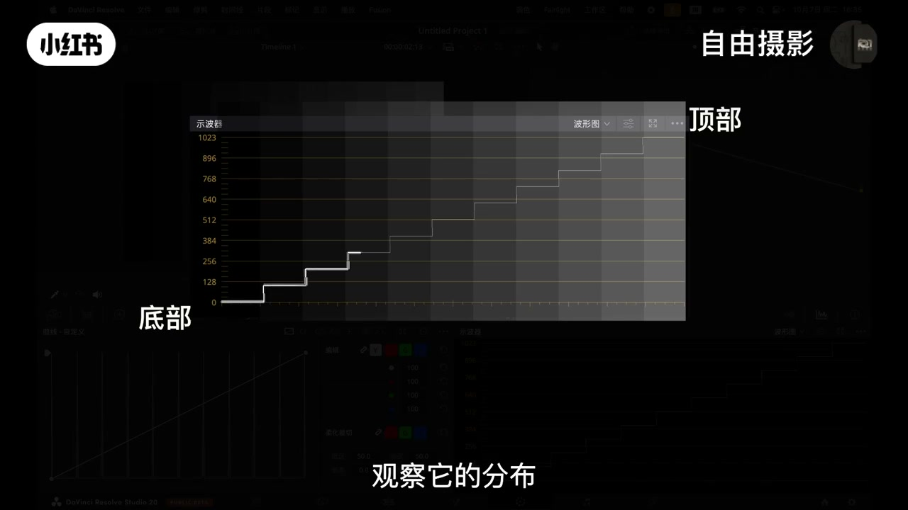
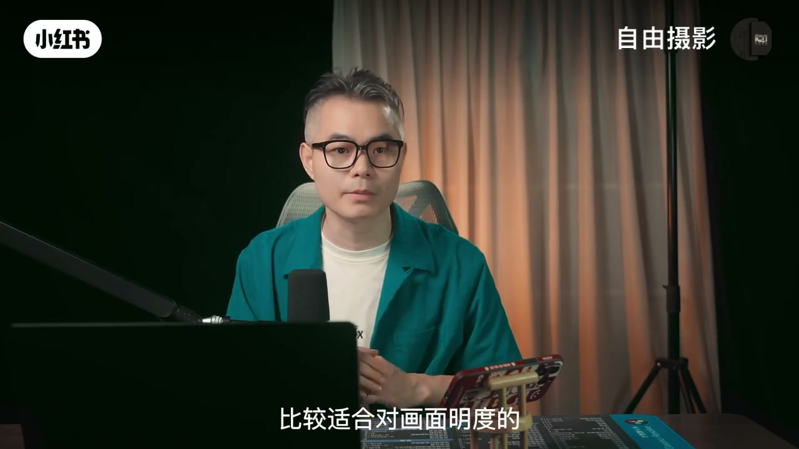
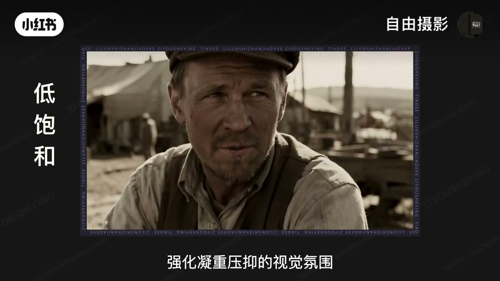
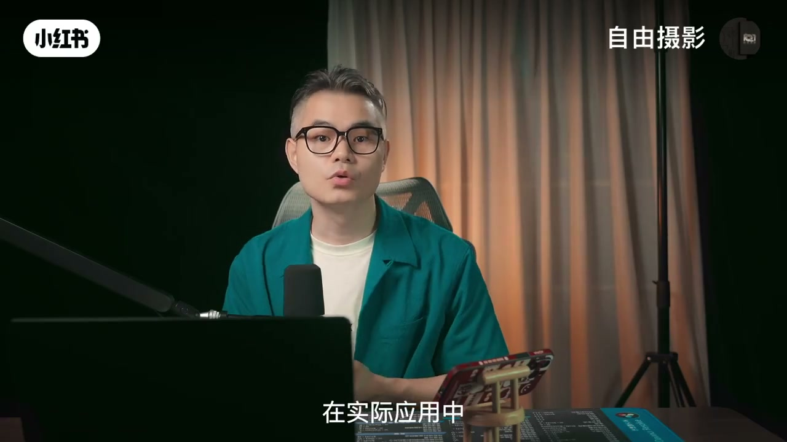
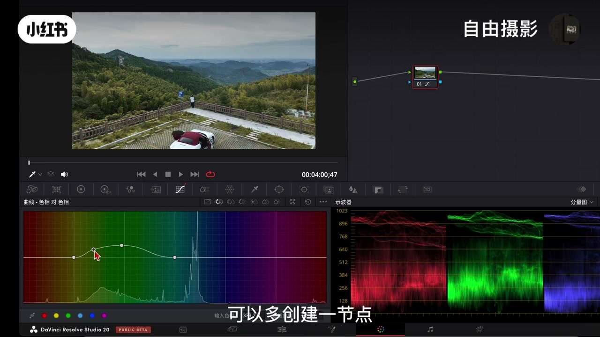
07:20-10:40调色流程与实战
先整体后局部：「在专业的调色中我们要遵守一个基本原则：先整体后局部，也就是先进行一级调色垫定全局影调基础，再进行二级调色处理比如画面里的吊灯、窗户光线、人物皮肤等。」
Log灰片五步：「第一步使用一级色轮中的明暗工具，将画面的暗部和高光拉开，恢复正常的明暗反差，并适当增强饱和度与对比度。第二步调整影调，例如通过两个节点来构建高反差效果，注意避免画面出现曝光过度或是死黑区域。第三步对画面的色相与饱和度进行统一调整，让画面显得干净统一。第四步进行风格化处理，在上方节点中通过曲线工具进一步压实画面，在下方节点中添加暗角效果实现边缘渐暗。最后一步给画面局部做强化，给窗户区域添加色光特效，增强视觉真实感与氛围。」
实战案例：「如果素材的直出色彩已经比较理想，可以跳过基础校正，直接从影调调整开始。用两个节点建立高反差效果，确保亮部不过曝暗部不死黑。然后曲线色相面板修正天空和花草的色相，再打开饱和度曲线调节花朵和天空的饱和度。第四步重点处理人物肤色，先通过曲线暗部提亮肤色，接着切换到色轮工具，通过降低中间调细节的方式实现对皮肤柔化磨皮处理，并打开矢量图看肤色是否偏色，肤色偏红适当加入互补色绿色来校正。第五步将深蓝的天空加入青绿色呈现青蓝色调。第六步处理暗部阴影，降低饱和度同时让色相略微偏向蓝色。最后添加电影暗角效果增强层次感与电影感。」
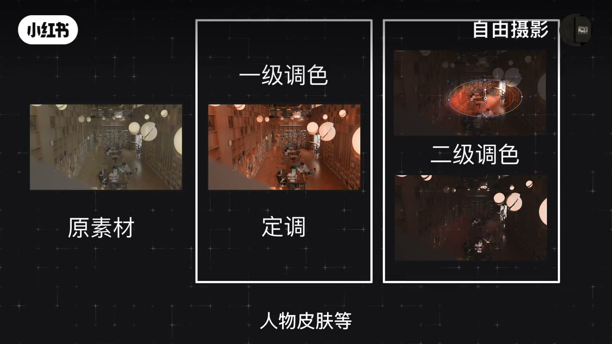
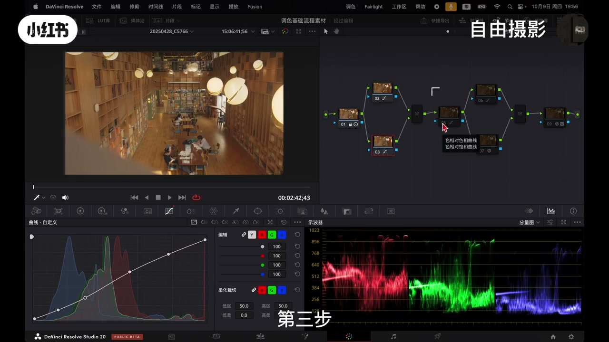
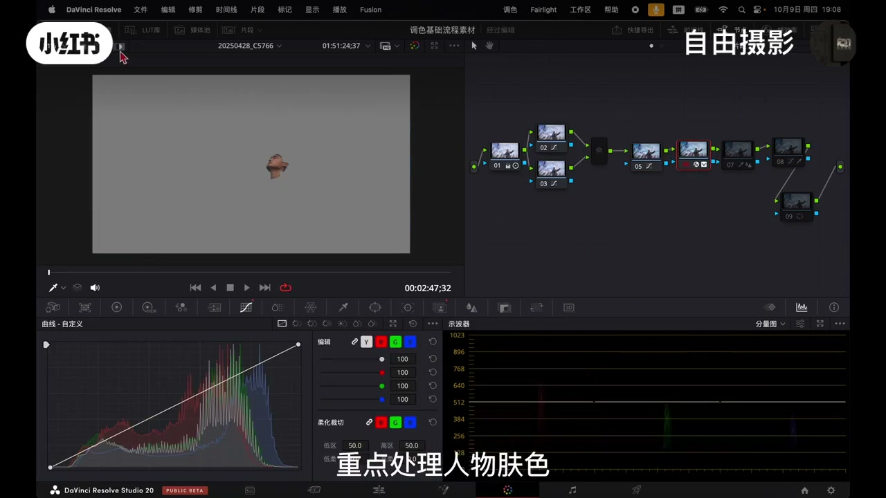
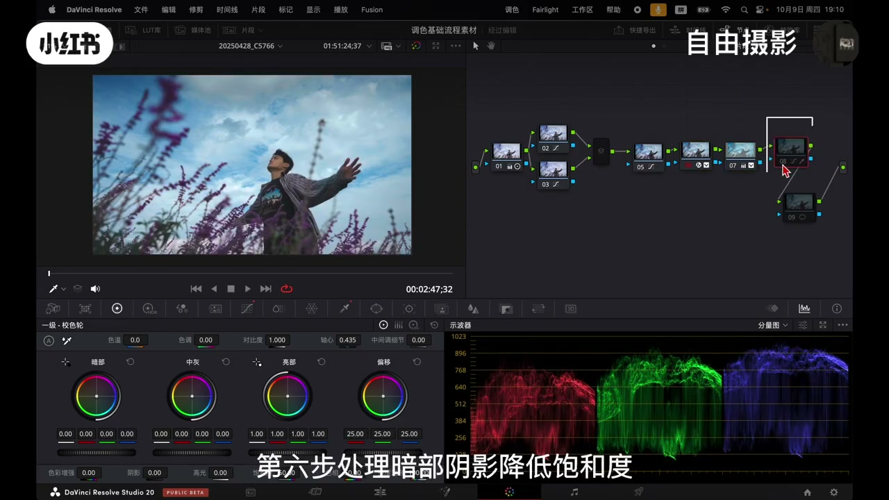
10:40-12:31总结
核心：「无论面对哪一种类型的素材，整个流程都要严格遵循从整体到局部的调整顺序。其核心可以总结为：在先整体后局部的调整方向下，灵活应用三种色彩关系与三大色彩要素。」
实践：「掌握理论最好的方式就是实践，建议在课后亲自操作一遍，将知识真正转化为自己的技能。」
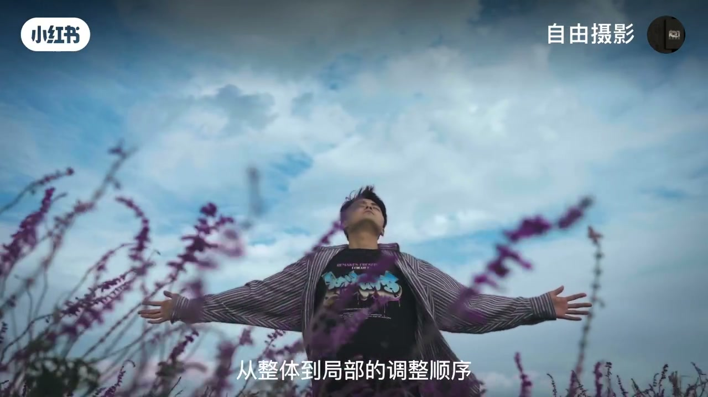
完整转录（371段）
以下文本由 Whisper medium 模型自动转录，可能存在少量识别误差，已尽可能修正。
今天我们学调色的底层原理
你可以做一个简单的想象
在一面墙上打上三盏灯
分别是红灯
绿灯和蓝灯
当红灯和绿灯的光束重叠时
我们就得到了黄色
当蓝灯和红灯光束重叠时
我们就得到了品红色
也叫阳红
当绿灯和蓝灯的光束重叠时
我们就得到了青色
因为我们控制的是光
所以可以随意调节
这三盏灯的亮度
我们把红色亮度调低一半
就会得到黄绿和蓝紫
把绿色亮度调低一半
就会得到橙色和青蓝
把蓝色灯光调低一半
就会得到青绿和纸红
最终形成一个
我们进行色彩分析时
常用的12摄像环
达芬奇软件中的摄轮
它的色彩排版逻辑
就完全对应着这个色环
当我们理解了光的色彩构成之后
就可以借助色彩环
来指导我们的色彩搭配
色彩搭配的风格有很多
但我们只需要掌握最核心
最使用的三种风格
就足以应对绝大多数的调色场景
后续的实战操作和审美提升
也将围绕这三大风格展开
第一种风格
互补色
在色腕上组一180度
相对位置的两种颜色
即为互补色
最经典的组合
比如黄色以蓝色
红色以青色
绿色以品红色
互补色是色彩对比中
最强烈的组合
核心的作用在于创造视觉焦点
和增强画面占领
它能够立刻抓住观众的视线
是引导注意力最有效的手段之一
在实际应用中
互补色还可以
一
突出主体分离层次
将主体以环境色为互补色关系
能让主体从背景中鲜明的凸显出来
好莱坞经典的层青色调即是点范
把环境调为青色冷调
人物肤色保持层环暖调
利用蓝环互补
使人物质感立体
画面极具电影感
二
可以综合色彩校正颜色
当画面人物肤色偏黄
可以借助互补色进行综合
通过增加少量蓝色
就能使皮肤恢复到更自然的白皙的状态
第二种风格
临近色
在色环上相距约60度的颜色
称为临近色
常见例子包括红以黄
蓝以青
紫以品红
临近色因色相接近
能营造和谐
统一的画面氛围
使色彩过度平滑
自然带来舒适的世界感受
有助于引导观众
沉浸于特定的情绪中
在实际应用中
暖调临近色适合表现温暖
安详温馨的氛围
例如在室内居家或黄昏的场景中
将主色调控制在黄
层及少量红色范围内
可以呈现出光线柔和
氛围统一的画面效果
而冷调临近色常用于传达冷静
孤独科技或神秘的情绪
例如夜景科幻片或嫌疑片
强化场景的冷静感或未来感
第三种风格单色系
单色系是指使用同一种颜色
通过变化画面的明度
以饱和度来构建整个色彩方案
这种风格能带来极致简严
统一和解的世界感受
它能够给画面带来高级感和艺术感
让观众更专注于光影结构
纹理细节和形状构成
而不是色彩本身
在实际应用中
单色系方案有很多类型的用途
首先它非常适合用来营造
强烈而纯粹的情绪氛围
黑白电影就是单色系极致的表现
其次这个方案也常用以表现未来感
性冷淡风或极简主义风格
当场景元素杂乱颜色过多时
使用单色系可以画房为景
立刻提升画面的秩序感
当你明确了调色的风格方向
知道画面要往哪种世界感受上靠拢之后
下一步就需要掌握实现这些风格的底层攻击
也就是色彩三要素
任何你看到的颜色
都可以通过这三个纬度来精确的描述和控制
也就是明度
饱和度以色相理解
他们就等于拿到了精准调色的控制面板
我们先来看第一要素
明度指的是色彩明暗程度
它是色彩的骨架
决定了画面的影调层次
如果把画面叠加上去
我们可以通过视波器直观的观察
它的分布从底部百分之零
纯黑到顶部百分之百纯白
为什么它是最重要的呢
一可以塑造立体与质感
如果画面没有明度层次
物体就是平面的
通过刻画亮部暗部和中间调
一个球底才能圆润
那么一块布料才能显示出纹理
人眼会自然看向明亮
且对比度高的区域
通过提亮主体
压暗环境
你可以不动声色的引导观众的视线
整体偏亮
对比柔和
带来轻盈
明亮
柔和的感受
低调
高反差
整体偏暗
对比强烈
会营造出深层
神秘或戏剧性的氛围
在软件中
摄轮已体现是控制画面明度的
两种常用工具
它们分别适用于不同金柱的调整需求
摄轮调整时会更直观
比较适合对画面明度的
整体性的处理
例如
当处理一副因雾霾影响而整体发挥
建筑缺乏立体感的层次风光时
可以通过摄轮工具
初步提升画面的整体对比
使灰闷闷的观感得到初步改善
如果需要对明度进行更为精细和局部的控制
曲线工具是更高效的选择
它可以对画面从暗部到亮部的
每一个明度的层级进行独立调节
例如
可以在保留高光部分细节的基础上
适当压按中间调以暗部
从而增强画面的整体反差与立体感
通过这样的局部调节
原本灰屏单调的画面会立刻变得通透
第二要素
饱和度
饱和度指的是色彩的鲜艳程度
如果我们看到画面的苹果
50%是属于正常画面
左边数值到0%
完全灰色
右侧到100%就是极致鲜艳
它控制着色彩的浓度
那么饱和度是如何影响画面的世界感受呢
提高饱和度会让画面更生动
更具活力
但过度提升会显得虚假
视野
降低饱和度就能营造出灵敬
压抑
复古
或高级的电影感
调整到0就会得到黑白影像
在实际操作中
饱和度可以结合自身想表达的情绪来塑造风格
高饱和度常建议需要传达极其情绪的世界场景
如儿童动画
浪漫爱情片
及风格化科幻作品
通过鲜明浓郁的色调
能够有效营造出活力
以能量的氛围
增加画面的世界感染力
反过来看
低饱和度更多情况会用在需要营造沉重感
或历史感的叙事场景
如战争题材
以复古主题影片
通过降低色彩存度
使画面偏向中性灰调
能够自然的削弱色彩的鲜活度
强化凝重压抑的世界氛围
帮助观众沉浸到特定的情境基调中
第三要素
摄像
摄像是色彩的基本相貌
例如红色
蓝色
绿色
它直接对应色彩在摄像曲线上的具体位置
调整摄像
就是在画面中选取目标颜色
通过在曲线上移动某点
来改变画面的色彩风格
以整体氛围
在实际应用中
我们可以通过色相调整
来统一画面中不同物体的颜色
使整体世界效果更加和谐
也可以通过改变主体色相
使它以周围环境形成对比
从而突出世界焦点
例如
当感觉画面中的树叶力色不足时
可以选中该原色区域
在曲线中将某点向下拉动
使它变为更深的绿色
如果向上移动某点
树叶就会偏向黄色
操作时
一个节点的调整强度不够
可以多串减一个节点
进一步将色调加强为浓郁的橙黄色
从而轻松营造出秋天的氛围
此外
我们还可以将摄像以饱和度进行联动调整
例如在摄像扭曲器中
如果发现画面中的衣服偏青绿色
可以选中这个青绿摄像
将它向深蓝方向移动
这时
衣服及周边区域原本偏淡的青绿色
就会转变为青蓝色
同时饱和度也会相应提升
画面的视觉冲击力谁知增强
当你掌握了色彩三要素这些核心理论
很多同学可能会遇到一个典型的困境
道理我懂了
思路也有了
但一打开软件
面对一段素材
还是不知道第一步从哪里开始
出现这种情况非常正常
要解决这个问题
你要明白一个清晰的调色流程思路
在专业的调色中
我们要遵守一个基本原则
先整体
后局部
也就是先进行一级调色
垫顶全级影调基础
再进行二级调色
比如画面里的吊灯
窗户光线
人物皮肤等
我们以处理Log灰片素材为例
整个流程可以这样分步推进
第一步
使用一级色轮中的明暗工具
将画面的暗部和高光拉开
恢复正常的明暗反差
并适当增强饱和度
与对比度
使色彩鲜活起来
在完成基本还原后
第二步是调整影调
例如
通过两个节点来构建高反差效果
这时要注意避免画面出现曝光过度
或是黑区域
第三步
对画面的摄像以饱和度进行统一调整
使摄像整体协调
避免杂乱
让画面显得干净
统一
第四步
进行分割化处理
在上方节点中
通过曲线工具进一步压实画面
充分挖掘素材的宽容度
在下方节点中
添加暗角效果
实现边缘见暗
最后一步
给画面局部做了强化
这里是给窗部区域添加色光特效
增强世界真实感
以氛围
整个流程严格遵循
从整体到局部的顺序
逐步推进
确保调色过程自由调理
又能充分发挥创意的意图
我们再来看一个实际调色案例
如果素材的直出色彩已经比较理想
我们可以跳过基础校正
直接从第二步
影调调整开始
首先进行整体处理
在第二步可以先做影调调整
如果单个节点难以达到足够的层次感
可以用两个节点来建立高反差效果
需要注意的是
在处理效果时
要确保亮部细节不出现过暴
同时暗部也不能死黑
确定影调基础后
第三步开始调整画面摄像
可以在曲线工具中打开摄像面板
先对天空和花草的摄像进行修正
调整完成后
再打开饱和度曲线
适当调节花朵和天空的饱和度
第四步进入局部调整
重点处理人物肤色
先通过调整曲线暗部提亮肤色
接着切换到摄轮攻击
通过降低中间调细节的方式
实现对皮肤柔化膜皮处理
并打开实量图
看一下肤色是否偏色
肤色偏红
适当加入互补色
绿色来校正肤色
第五步继续对天空做局部调整
将深蓝的天空加入青绿色
使它呈现出青蓝色调
第六步处理暗部阴影
降低饱和度
同时让摄像略微偏向蓝色
这样会显得干净
最后添加电影暗角效果
增强画面的层次感与电影感
无论面对哪一种类型的素材
整个流程都要严格遵循
从整体到局部的调整顺序
以上都是本节课的核心内容
现在你已经掌握了从色彩原理
搭配方法到调色实战的完整思路
其核心可以总结为
在先整体后局部的调整方向时
灵活应用三种色彩关系
以三大色彩要素
掌握理论最好的方式就是实践
建议在课后亲自操作一遍
将知识真正转化为自己的技能